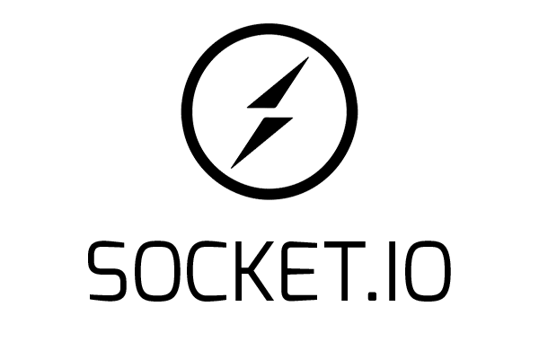
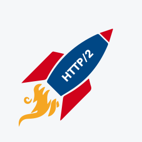

2009
- Création de NodeJS par Ryan Dahl, alors employé de l'entreprise Joyent
- Création du gestionnaire de packets NPM
2010
- Lancement officiel de NPM
- Création du framework Express
- Création de la librairie Socket.IO

2011
- NPM 1.0
- LinkedIn et Uber utilisent NodeJS dans leurs applications
2012
- Ryan Dahl arrête de suivre quotidiennement le projet NodeJS et est remplacé par Isaac Schlueter, créateur de NPM et employé de l'entreprise Joyent.
2013
- Introduction de la stack MEAN (MongoDB, Express, Angular, Node)
- Paypal et Ebay pour remplacer des applications développées en Java
- Création du framework Atom Shell (renommé plus tard Electron)
2014
- Le projet io.js est créé. Il s'agit d'un fork de NodeJS initié en raison de l'influence de l'entreprise Joyent sur le projet.
- Node v4.2.0 (LTS)
- Netflix utilise NodeJS
2015
- Création de la fondation NodeJS et réunification des projets io.js et NodeJS.
- Création d'un calendrier prévoyant des mise à jours constantes et régulières.
2016
- Création de Yarn
- Node v6.9.0 (LTS)
2017
- Node v8 (LTS)
- Gestion du HTTP/2

2018
- Node v10 (LTS)
- Experimentation ES Modules